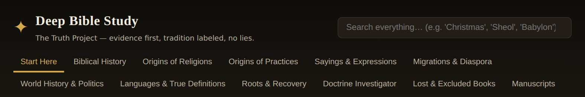
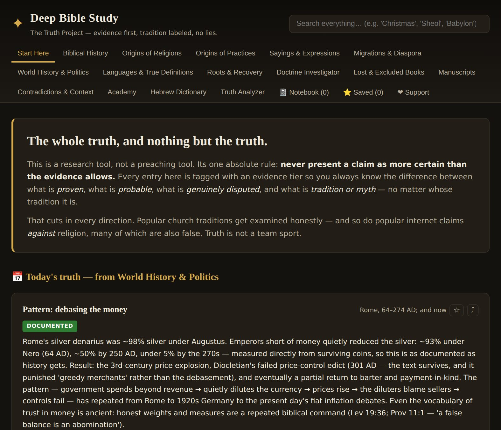
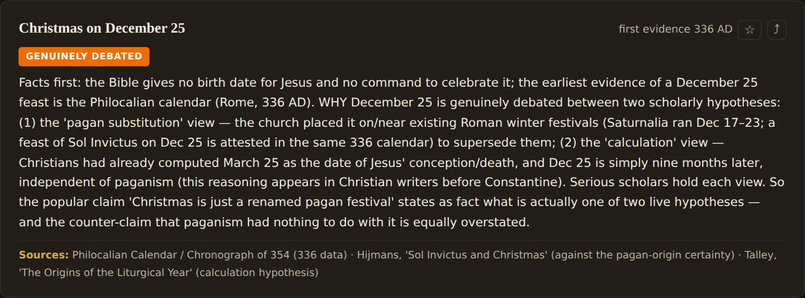
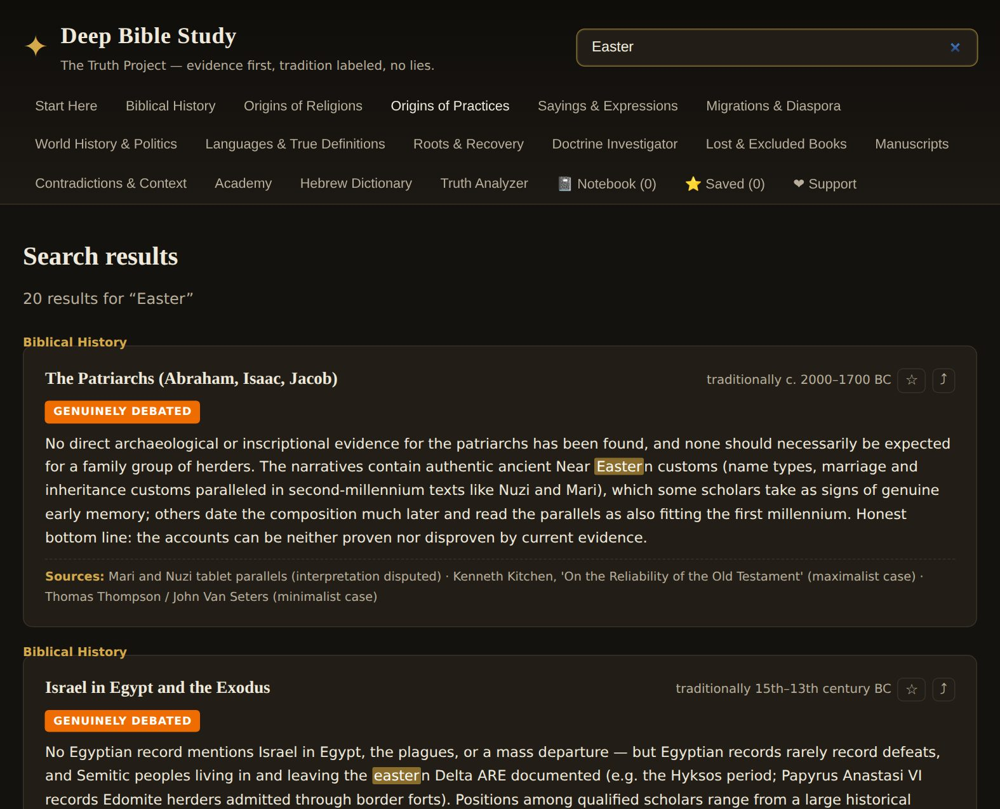
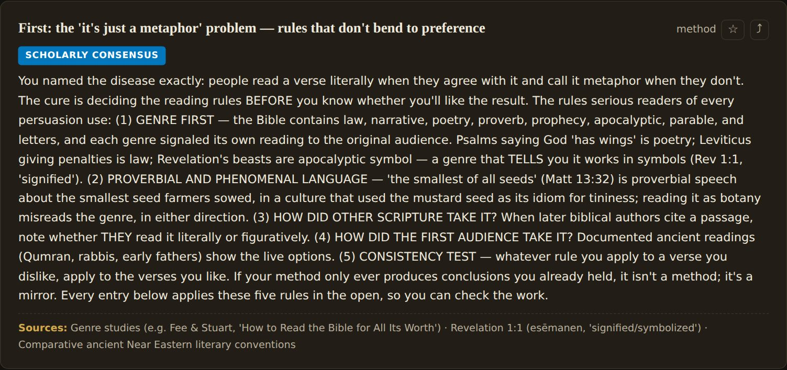
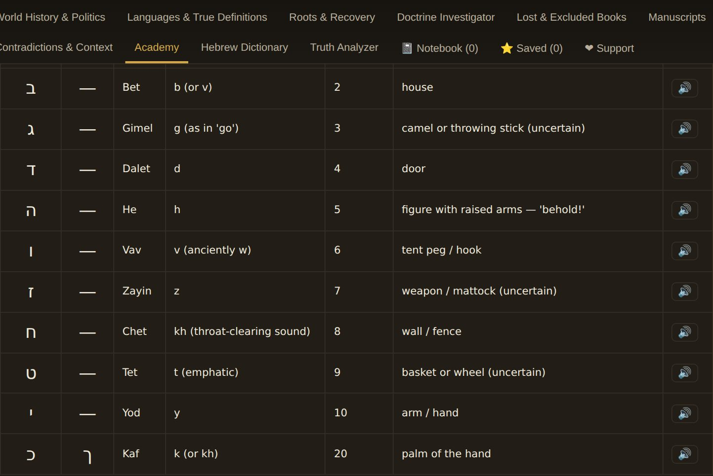
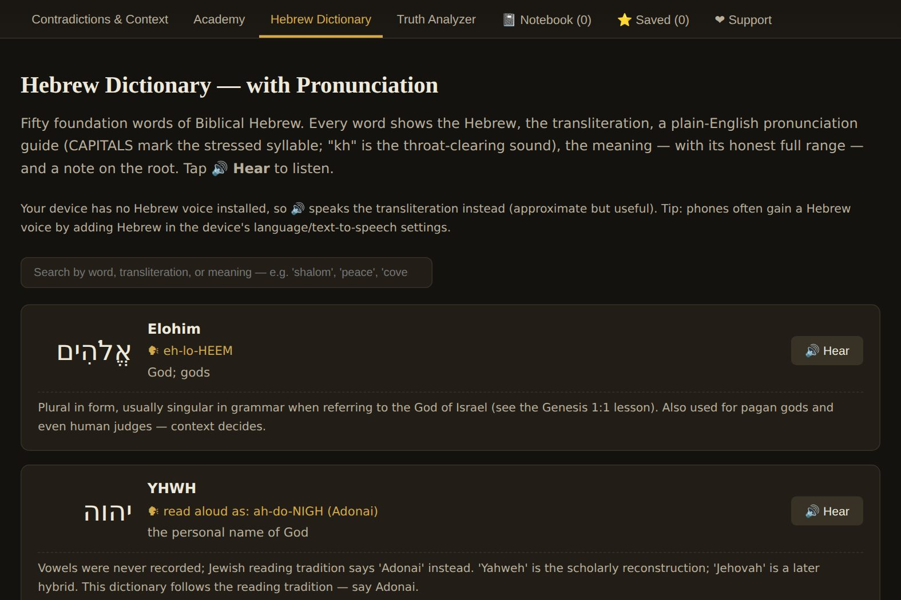
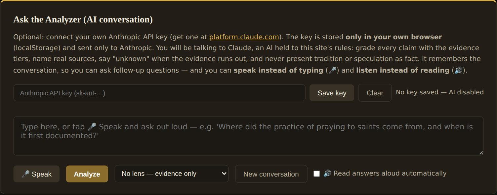
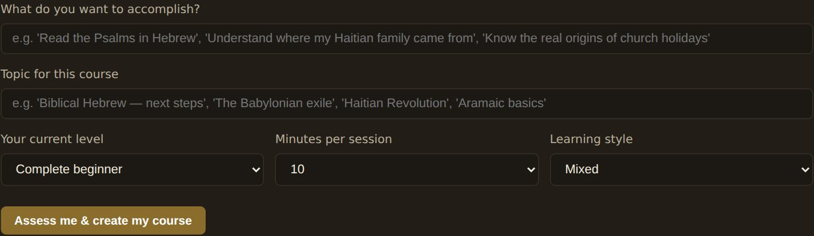
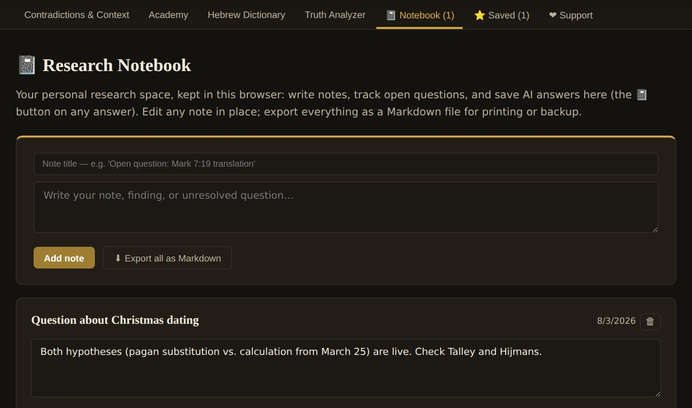

📖 How to Use This App — a walkthrough
Ten short steps, with real pictures of every screen. Nothing to install, nothing to sign up for. Read straight through the first time (about 6 minutes), then come back to any step whenever you need it.
The one-sentence version: use the top menu to browse, the search box to find anything, the ⭐ star to keep what matters, and — if you add your own API key — talk to an AI that has to prove every claim it makes.
1 The top menu is your map
Every subject has its own tab. On a phone the tabs wrap onto several lines — scroll the menu area to see them all. The search box at the top right searches everything at once, so when in doubt, just type there.

💡 The tabs in plain language: Start Here = the rules of evidence · Biblical History → Roots & Recovery = the research sections · Doctrine Investigator, Lost & Excluded Books, Manuscripts, Contradictions = the deep study tools · Academy & Hebrew Dictionary = learning · Truth Analyzer = the AI · 📓 Notebook, ⭐ Saved, ❤ Support = your own space.
2 Start Here — learn the colored badges first
This is the most important screen in the app. Every single entry carries a colored badge telling you how strong its evidence is. Learn these six colors once and you can read the whole app critically.

💡 Green = Documented (physical proof). Blue = Consensus (most scholars, by inference). Orange = Genuinely debated. Purple = Tradition only. Red = Myth / unsupported. If something is orange or purple, nobody has proven it — no matter how confidently they told you.
3 How to read an entry
Here's a real one. Notice the four parts: the title and date, the evidence badge, the body (which tells you what's proven and what isn't — in both directions), and the Sources line at the bottom so you can check the work yourself.

💡 See the two small buttons at the top right of the card? ☆ saves the entry to your Saved tab. ⤴ copies a clean, sourced summary you can paste into a text or post.
4 Search everything at once
Try this now: type Easter in the search box. You'll get results pulled from several different sections at once, with your word highlighted, and each result labeled with which section it came from.

💡 Other good things to try: Sheol · Kongo · Yahusha · tithing · Enoch · OK · Quirinius.
5 Contradictions & Context — read the first entry before the rest
This section handles the passages people argue over. The very first entry is the method — the rules for when something is literal and when it's a metaphor, decided before you know whether you'll like the answer. Read that one first; the other ten entries all apply it in the open.

💡 Each entry shows every context you need — what the Hebrew or Greek allows, what the first audience assumed, what outside records say — then grades every proposed answer honestly. Some tensions dissolve; some stay unresolved. It tells you which, and leaves the conclusion to you.
6 Learn Hebrew — and hear it
Open Academy and tap any lesson to expand it. Lesson 2 gives you the alphabet: every letter with its name, its sound, its number value, and its ancient picture-origin. Tap 🔊 on any row to hear the letter.

💡 Pass a lesson's short quiz and it's marked complete with a green check — your progress is remembered on this device. By lesson 8 you'll read Genesis 1:1 in Hebrew, word by word.
7 The Hebrew Dictionary speaks
Fifty foundation words. Each shows the Hebrew, how to say it (CAPITALS mark the stressed syllable), the honest range of meaning, and a note about its root. Tap 🔊 Hear to listen. Search by the word, the sound, or the English meaning.

💡 If your phone has a Hebrew voice installed, the button speaks real Hebrew. If not, it speaks the pronunciation guide — still useful. The line at the top of that page tells you which mode you're in, and how to add a Hebrew voice in your phone's settings.
8 Turn on the AI (optional — this is the only setup step)
The whole app works without this. But if you want to ask questions and have a personal tutor, you need a free key from Anthropic:
- Go to platform.claude.com and make an account.
- Find API Keys → Create key → copy it (it starts with
sk-ant-). - Come back here, open Truth Analyzer, paste it in the key box, tap Save key.

💡 Your key is stored only on your own device and sent only to Anthropic — never to me or anyone else. Anthropic charges by usage; typical study questions cost pennies, and you can set a spending cap on their site.
9 Talk to it — and let it talk back
Once your key is saved: tap 🎤 Speak and just ask out loud instead of typing. Tick 🔊 Read answers aloud and it will speak every answer. It remembers the conversation, so you can ask follow-ups like "wait, explain that part again."
The lens picker (the dropdown next to Analyze) is powerful: ask the same question as a Rabbinic Jew, a Catholic, a Messianic believer, an Islamic scholar, or a secular historian would frame it — each with its assumptions stated up front. Or pick "Compare 3 major lenses" to see them side by side.
Good first questions to try:
- "Where did the practice of praying to saints come from, and when is it first documented?"
- "Show me every passage on the Sabbath in both testaments, with the context of each."
- "Is there historical evidence outside the Bible for the exile in Babylon?"
- "Someone told me [claim]. Check it against the evidence."
💡 It's under strict orders: grade every claim by evidence, cite real sources, correct myths in both directions, and say "the available evidence does not allow a reliable conclusion" when that's the truth. If it ever states something as certain without evidence, that's a bug — tell me.
10 Build your own course, keep your own notes
In Academy, scroll to the Course Builder. It starts by asking what you want to accomplish, your level, and how many minutes you have — then designs a course to fit and teaches one bite-size lesson per turn, quizzing you as you go.

And everything you want to keep lives in two tabs: ⭐ Saved (starred entries) and 📓 Notebook (your notes and questions — plus any AI answer you tap 📓 on). The Notebook exports as a file you can print or back up.

That's the whole app
A good first session, if you want one: Start Here (learn the badges) → search something you've always wondered about → open Contradictions & Context and read entry one → tap ⭐ on anything that grabs you → then start Academy lesson 1.
Everything you save stays on your own device. Nothing here tracks you, and there are no ads. If you ever find an entry that claims more certainty than its evidence allows — that's a bug, and I want to know.
The whole truth, and nothing but the truth.
This is a research tool, not a preaching tool. Its one absolute rule: never present a claim as more certain than the evidence allows. Every entry here is tagged with an evidence tier so you always know the difference between what is proven, what is probable, what is genuinely disputed, and what is tradition or myth — no matter whose tradition it is.
That cuts in every direction. Popular church traditions get examined honestly — and so do popular internet claims against religion, many of which are also false. Truth is not a team sport.
How every claim is graded
How we know anything about the past
1. Physical evidence
Archaeology, inscriptions, coins, destruction layers, carbon dating. The strongest kind of evidence — it can't be rewritten later, though it still requires interpretation.
2. Contemporary written sources
Documents written at or near the time of the event, especially by different sides. When Assyrian records, Babylonian chronicles, and the Bible independently describe the same event, confidence is very high.
3. Multiple independent attestation
A claim found in several sources that did not copy each other is far stronger than one found in a single late source. A single source centuries after the event is weak evidence, even if it's repeated everywhere today.
4. Criterion of embarrassment
Details that make the author's own side look bad are unlikely to be invented. The Bible recording Israel's constant idolatry, or a king's defeat, counts for the honesty of those passages.
5. Pattern reasoning — used honestly
Where records are missing, historians reason from patterns (how empires behaved, how languages change, how customs spread). This can point to what is most likely — and this app always labels such conclusions as inference, never as proven fact.
6. Absence of evidence
Absence of evidence is weak evidence of absence — but it is not nothing. If a large event should have left traces and none are found, that lowers confidence. We say so plainly instead of pretending.
What's inside
Biblical History
A timeline of ancient Israel with what archaeology confirms, what it disputes, and what remains unknown.
Origins of Religions
Where today's religions and denominations actually came from, with dates and documents.
Origins of Practices
Christmas, Easter, Sunday, Halloween, birthdays, wedding rings — where each really came from, myths corrected in both directions.
Sayings & Expressions
"OK", "scapegoat", "rule of thumb", "honeymoon" — when each phrase entered society, and which famous origin stories are fake.
Migrations & Diaspora
Where the Israelites started and where they ended up — every documented deportation and diaspora, and every descent claim graded by evidence.
World History & Politics
Empires, and the political patterns that repeat from Babylon and Rome to today: debased money, propaganda, bread and circuses.
Roots & Recovery
Haitian heritage: the documented African kingdoms the ancestors came from, what was erased and how, what survived, and how to recover your own family line.
Languages
Hebrew, Aramaic, Greek — how the languages changed, and the true original definitions behind English words like hell, church, virgin, Lucifer.
Truth Analyzer
A library of popular claims examined against evidence, plus an optional AI assistant bound by strict truth-first rules — speak to it and hear it answer.
Doctrine Investigator
Sabbath, hell, the soul, Trinity, tithing, baptism — each traced from earliest evidence through its development, with established / debated / unprovable kept separate.
Lost & Excluded Books
1 Enoch, Jubilees, Maccabees, the Didache, Gospel of Thomas — what each is, who accepted it, and why it's in some Bibles and not others.
Manuscripts & Translations
Masoretic, Dead Sea Scrolls, Septuagint, Samaritan, the great codices — the physical witnesses behind every Bible, and why they differ.
Contradictions & Context
The argued-over passages, OT to NT, with every context shown — linguistic, cultural, historical — and every resolution graded honestly, so the conclusion is yours.
Academy
A built-in Ancient Hebrew course (read Genesis 1:1 in Hebrew by lesson 8), plus an AI tutor that assesses your goal and builds a customized bite-size course on any topic here.
Research Notebook
Write notes, track open questions, save AI answers, and export your whole notebook as a file.
Biblical History & the Ancient Israelites
A chronological record. Each entry states what the evidence is — inscriptions, archaeology, outside records — and grades the confidence honestly, including where the Bible is confirmed, where it is disputed, and where we simply don't know.
Origins of Today's Religions
Where the religions and denominations you see today actually came from — with dates, founding documents, and the historical forces behind each split.
Origins of Practices & Customs
The things people do today — holidays, customs, symbols — traced to their real documented origins. Where a popular "pagan origin" story is itself a myth, we say so. Where a practice genuinely has no biblical basis, we say that too. Whether any practice should be done is your judgment to make — this page gives you the true history to make it with.
Migrations of the Israelites — Where They Started, Where They Ended Up
Every documented movement — deportations, flights, and diasporas — followed by every major claim of Israelite descent around the world, each graded strictly by the evidence: the proven, the partially supported, the traditional, and the mythical.
Sayings & Expressions — Where the Words You Use Came From
Everyday phrases, traced to their documented first appearance and the moment they entered common life — including the many whose famous "origin stories" are themselves myths. If you say "OK", "scapegoat", "deadline", or "rule of thumb", you're speaking history; this page shows you which history, with the citations.
World History & Politics — Then and Now
The empires that shaped the ancient world (and Israel's story), and the political patterns that keep repeating: money debasement, propaganda, the drift from republic to strongman, bread and circuses.
Languages & True Definitions
The Bible was written in Hebrew, Aramaic, and Greek — not English. Many English words carry meanings the original words never had, and English itself has drifted since 1611. This section gives the documented original meanings.
Roots & Recovery — Haitian Heritage
The documented history of the peoples who became the Haitian people: the Taíno of Ayiti, the named African kingdoms the ancestors were taken from, the machinery that erased names and languages, what survived anyway (Kreyòl carries West African grammar to this day), the Revolution, the ransom — and the practical guide to recovering your own family line while the elders who remember are still with us.
Doctrine Investigator
Major teachings examined by one fixed structure: the claim → key texts → earliest evidence → how it developed → what's established, what's debated, and what cannot be proven. Ideas get critiqued; people never do. The verdict on what to believe stays where it belongs — with you. For deeper digging, take any doctrine to the Truth Analyzer and examine it under different interpretive lenses.
Lost, Excluded & Disputed Books
The writings called apocrypha, deuterocanonical, pseudepigrapha, "lost books" — what each one actually is: its date, language, surviving manuscripts, canonical status in every tradition, and the documented reasons it was accepted, disputed, or excluded. Rule of this library: no "removed to hide the truth" claims without evidence of suppression — and where the evidence shows something else (like the KJV of 1611 including the Apocrypha), you'll read it here.
Manuscripts & Translations
The physical witnesses behind every Bible: the Masoretic Text, Dead Sea Scrolls, Septuagint, Samaritan Pentateuch, the New Testament papyri and great codices, the Vulgate, the Syriac Peshitta, and the Ethiopian tradition — what each is, where it lives today, what it shows, and why manuscripts differ (the documented causes, from copying slips to the rare deliberate edit).
Contradictions & Context
The passages people argue over, Old Testament to New — each shown with ALL its contexts: linguistic (what the Hebrew or Greek actually allows), cultural (what the first audience assumed), historical (what the outside records say), and literary (what genre the passage is). Every proposed resolution is graded honestly: some tensions dissolve under context, some have plausible-but-unproven answers, and some remain genuinely hard — we tell you which is which, both directions, with one set of reading rules applied consistently whether the result is comfortable or not. Then the conclusion is yours. Start with the first entry — the "it's just a metaphor" problem — before reading the rest.
Academy — Learn, Bite-Size
Two ways to learn here. First, a built-in Ancient Hebrew course — short lessons with self-check quizzes and read-aloud, tracking your progress in this browser. Second, the Course Builder: an AI tutor agent that starts by assessing what you want to accomplish, then designs a customized bite-size course on any topic this site covers and teaches it to you lesson by lesson — by voice or by text.
📜 Ancient Hebrew — the built-in course
Eight lessons, ~10–15 minutes each: the two scripts, the full aleph-bet, the vowel points, first words, the Name, the root system — ending with you reading Genesis 1:1 in Hebrew. Tap a lesson to open it; pass its self-check to mark it complete. Each lesson has a 🔊 Listen button.
🎓 Course Builder — your personal tutor agent
Uses the same API key you saved in the Truth Analyzer tab (stored only in your browser). Step 1 is the assessment: tell the agent what you want to accomplish. It designs a course sized to your minutes and style, then teaches one bite-size lesson per turn — with a short quiz after each, honest grading, and the same evidence-tier truth rules as the rest of the site. Use 🎤 to talk and 🔊 to listen instead of typing and reading.
Your course plan
Your tutor
Truth Analyzer
Popular claims examined against the evidence — for and against, then a verdict. The verdict follows the evidence, not any side. Below the library, you can connect an AI assistant bound by strict truth-first rules to analyze new questions.
Ask the Analyzer (AI conversation)
Optional: connect your own Anthropic API key (get one at platform.claude.com). The key is stored only in your own browser (localStorage) and sent only to Anthropic. You will be talking to Claude, an AI held to this site's rules: grade every claim with the evidence tiers, name real sources, say "unknown" when the evidence runs out, and never present tradition or speculation as fact. It remembers the conversation, so you can ask follow-up questions — and you can speak instead of typing (🎤) and listen instead of reading (🔊).
Hebrew Dictionary — with Pronunciation
Fifty foundation words of Biblical Hebrew. Every word shows the Hebrew, the transliteration, a plain-English pronunciation guide (CAPITALS mark the stressed syllable; "kh" is the throat-clearing sound), the meaning — with its honest full range — and a note on the root. Tap 🔊 Hear to listen.
📓 Research Notebook
Your personal research space, kept in this browser: write notes, track open questions, and save AI answers here (the 📓 button on any answer). Edit any note in place; export everything as a Markdown file for printing or backup.
⭐ Your Saved Entries
Entries you've starred, from every section — your personal study collection, kept in this browser. Tap the ⭐ on any entry to remove it, or ⤴ to share it.
❤ Support This Work
Deep Bible Study is free, has no ads, and never will sell your data — the truth shouldn't have a paywall in front of it. If it has value to you, here's how to keep it growing (and to fund the Witness Project, so elders' testimony gets recorded before it's lost).
Where support goes
Research time for new sections, Kreyòl translation of the whole app, and building the Witness Project — the elder-testimony recording app described in this repository.
Free ways to help
Share entries (the ⤴ button on any card), tell someone who'd use the Hebrew course, and send corrections — an entry that overstates its evidence is a bug.